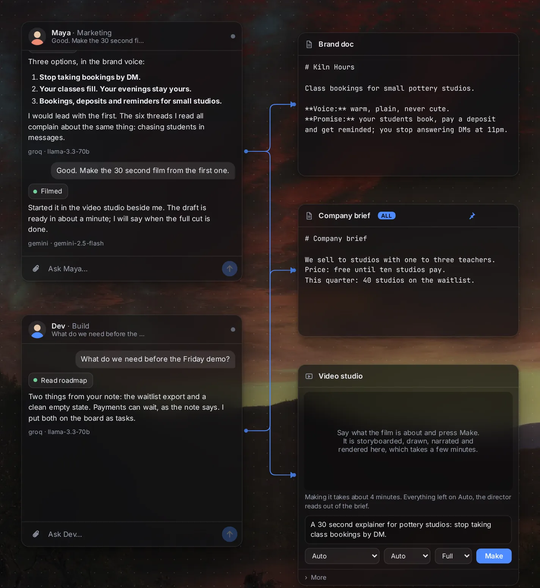
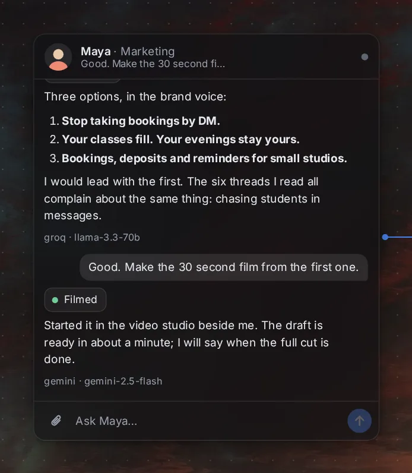
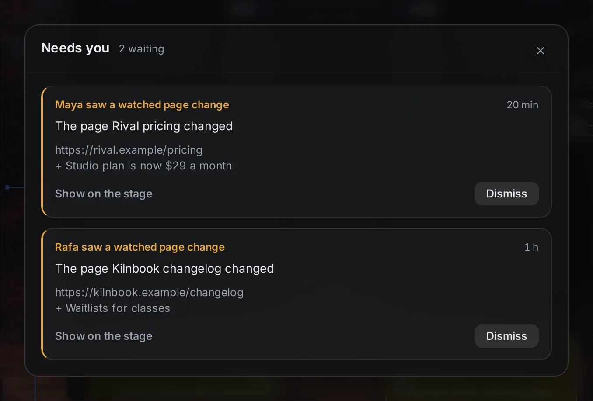
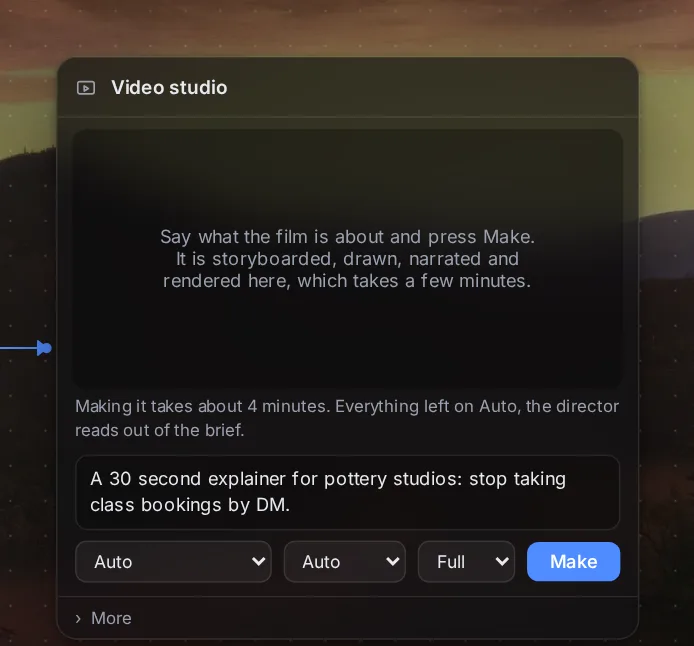
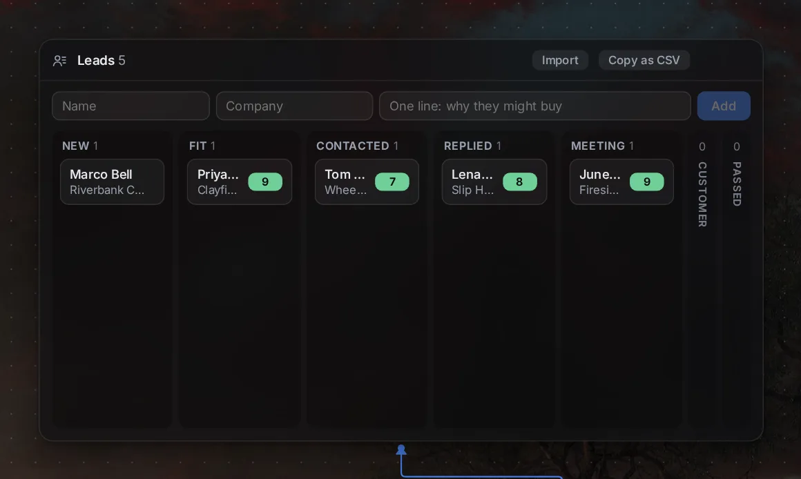
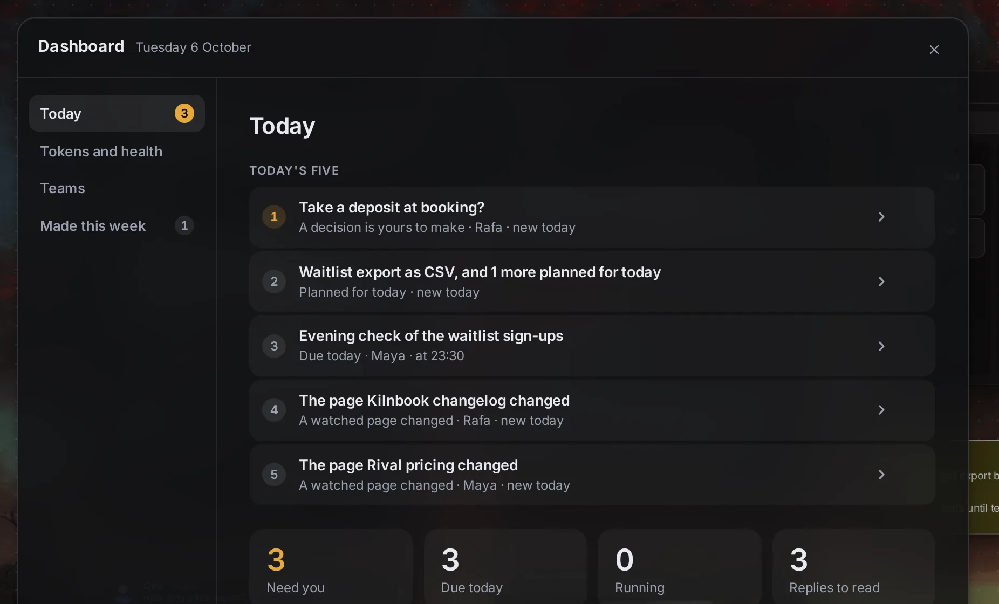

A company of your own, on your own machine.
A canvas where a small team of AI people works beside you. Wire them to what they may read, and they draft, research, film and follow up. You decide. Nothing leaves your computer that you did not wire.
- Runs on the free allowances of hosted models, with your own keys. No subscription.
- Runs on your computer, and nothing runs while it is closed.
- Anything that goes out, like an email, asks you first.
Wire it, and they can read it.
Cards on a canvas, wires between them. A wire is access: each person reads only what is wired to them.
- Docs, notes, links, pictures and whole sites become context when you draw a line.
- Pin a doc and the whole company reads it. Writing to it still takes a wire.
- Rooms, cards and wires stay where you put them, like a desk.

Specialists with a brief and tools.
Marketing, build, sales: each person works in a room of their own, and shows what they did to reach an answer.
- They search and read the web, drive a browser, write code in a sandbox and keep a task board.
- Ready-made teams: Launch, Pitch practice, Due diligence and Startup evaluation.
- They keep a memory and learn skills, and you can read both.

Nothing goes out without your yes.
Amber means one thing in the app: this waits for you. A person proposes. You approve, and only then does it happen.
- Needs you gathers every approval and every watched page that changed in one place.
- Decisions are markdown files in your own folder.
- Sending stays with you. A lead is marked contacted only by you, or by an email you said yes to.

Films, voices and pictures, made here.
Write a brief. The Video studio picks an angle, storyboards it, narrates it and renders the film on your computer.
- Cuts land on the words the narrator actually says, with real camera moves and captions.
- Music is used only under terms that let you sell the film, and its licence is written down beside every file.
- Notes on a finished film remake only what the notes touch, saved as the next version.

Know who to sell to, and when to follow up.
A light CRM on the stage: one card, a column for each stage from New to Customer.
- A wired person scores fit with evidence and drafts a first message from what the lead actually said.
- Take the list away as CSV, or mirror it to your own Twenty when you outgrow it.
- Finding leads asks you first and runs on your machine.

One screen for the company.
What needs you, what ran, what changed and what it cost, on one screen that opens with a key.
- Tokens by day and by person, and each provider's allowance left today.
- A daily digest on your phone over Telegram, and voice notes back.
- Every row opens the room or card it came from.

Your company stays on your computer.
Your docs, rooms, decisions and films live in one folder on your machine. What leaves it is what you send to a model you chose.
- Only your machine can reach it. The app's server listens on this computer alone and answers only its own page.
- Local where it can be. Voices, search by meaning and word timings run here. Pictures can too, when the free cloud allowance runs out.
- Backups you hold. One archive of everything you wrote, kept in a folder on your machine.
Run it on your computer.
There is no public download or installer yet. With a copy of the source, it runs in three steps. It is built on Linux with Node 26 and pnpm.
-
Install and start it.
cd app && pnpm install && pnpm dev -
Put a free key or two in
.envat the top of the folder. More keys mean more free quota. Cerebras, Mistral and OpenRouter keys are optional.GROQ_API_KEY=your key GEMINI_API_KEY=your key -
Open the stage in your browser.
http://localhost:7420
Films also need Chrome and ffmpeg. For a desktop window, run pnpm shell:build once, then pnpm shell.
Questions
Is it free?
Yes. People answer from the free allowances of hosted models, with your own keys, and from a model on your machine if you run one. The studios need no key at all.
Which keys do I need?
A Groq or a Gemini key to start. Both are free. Only the keys you set are used.
What leaves my computer?
What you ask a hosted model goes to that provider, and what a person reads on the web is fetched from it. Run a local model with Ollama and the conversation stays here too.
What runs on my machine?
Voices, search by meaning, word timings and film rendering. Pictures are drawn here when the free cloud allowance is spent, which needs a Vulkan driver and about 9 GB of free memory.
Can I sell what it makes?
The music is chosen only under terms that allow it, with the licence written down. The optional OmniVoice voice engine is the exception: its weights are non-commercial, so it is off until you switch it on, and every file it makes says so.
Is my work backed up somewhere else?
Not yet. Backups stay on this machine, so copy the folder somewhere safe.
Why won't a film play in the desktop window?
On Linux the window needs GStreamer's "good" plugins to play video. The browser plays every film, and every card offers a download.